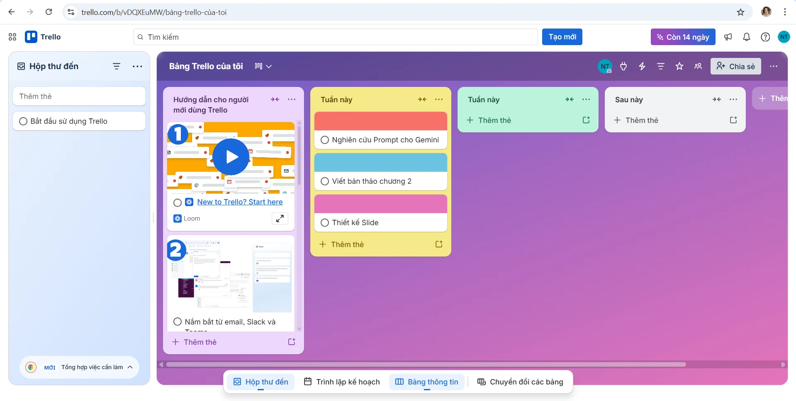

BÁO CÁO CÁ NHÂN: SỬ DỤNG CÔNG CỤ HỢP TÁC TRỰC TUYẾN TRONG DỰ ÁN NHÓM
Môn học: Nhập môn Công nghệ số và Ứng dụng trí tuệ nhân tạo (UEB.D1)
Họ tên: Đinh Lê Thảo Nguyên · MSSV: 25051013
I. GIỚI THIỆU CHUNG
Dự án: Nghiên cứu và so sánh hiệu quả của các mô hình ngôn ngữ lớn (LLMs): ChatGPT, Gemini và Claude.
Vai trò cá nhân: Trưởng nhóm điều phối và Chuyên viên phân tích dữ liệu AI.
Mục tiêu: Sử dụng các công cụ số để tối ưu hóa quy trình làm việc nhóm, đảm bảo tiến độ và chất lượng báo cáo cuối kỳ.
II. DANH SÁCH CÔNG CỤ SỬ DỤNG
Để tối ưu hóa không gian làm việc, em đã thiết lập hệ sinh thái gồm 4 công cụ thuộc các nhóm khác nhau:
Quản lý dự án: Trello (Thiết lập Kanban board, sử dụng nhãn dán/label để phân loại độ ưu tiên).
Soạn thảo tài liệu: Google Docs (Cộng tác thời gian thực, quản lý phiên bản).
Lưu trữ và chia sẻ: Google Drive (Xây dựng hệ thống thư mục logic).
Giao tiếp: Zalo/Microsoft Teams (Trao đổi nhanh và họp trực tuyến).
III. MÔ TẢ TÁC VỤ VÀ MINH CHỨNG CHI TIẾT
1. Quản lý tác vụ trên Trello (Năng lực cá nhân)
Em đã tự thiết lập một bảng công việc cá nhân. Thay vì chỉ ghi tên việc, em đã sử dụng tính năng Checklist và Due date để kiểm soát tiến độ.
Tác vụ đã thực hiện: Tạo các thẻ "Nghiên cứu Prompt cho Gemini", "Viết bản thảo chương 2", "Thiết kế Slide".
Tần suất cập nhật: 4 lần/tuần (Cập nhật khi bắt đầu, đang làm và hoàn thành).
Minh chứng:

2. Soạn thảo và Đóng góp nội dung trên Google Docs
Trong quá trình thực hiện dự án, em không chỉ viết phần mình phụ trách mà còn chủ động sử dụng tính năng Comment để phản biện và hỗ trợ các thành viên khác.
Tác vụ: Viết hơn 1.500 từ cho phần so sánh tính năng sáng tạo của Claude và ChatGPT.
Lịch sử đóng góp: Thể hiện rõ ràng trong phần "Version History".
3. Quản lý tài nguyên trên Google Drive
Để đạt mức độ tối ưu, em đã xây dựng cấu trúc thư mục 3 cấp:
Dự án AI_Nhóm 1 > 01_Tài liệu tham khảo > 02_Bản nháp_Working > 03_Sản phẩm cuối.
Tất cả các tệp tin đều được đặt tên theo quy tắc: [Ngày]_[Tên nội dung]_[Phiên bản].
4. Tương tác và thảo luận nhóm
Em đã thực hiện hơn 12 lượt tương tác chủ động trong tuần qua, bao gồm việc giải đáp thắc mắc về lỗi đăng nhập AI cho bạn cùng nhóm và phản hồi các chỉ đạo từ giảng viên.
- Minh chứng: IV. PHÂN TÍCH HIỆU QUẢ, THÁCH THỨC VÀ GIẢI PHÁP

1. Hiệu quả của công cụ
Việc kết hợp Trello và Google Docs giúp em giảm thiểu được 30% thời gian họp hành không cần thiết vì mọi người đều nhìn thấy tiến độ của nhau một cách trực quan.
2. Ba thách thức gặp phải
Xung đột phiên bản: Khi hai người cùng chỉnh sửa một đoạn nội dung trên Docs dẫn đến việc mất ý tưởng của nhau.
Quá tải thông báo: Các thông báo từ Trello và Zalo liên tục gây xao nhãng trong giờ học chính khóa.
Khó khăn kỹ thuật: Công cụ Claude đôi khi bị chặn IP tại Việt Nam, gây gián đoạn quá trình lấy dữ liệu minh chứng.
3. Ba giải pháp đã thực hiện
Giải pháp 1: Sử dụng tính năng "Suggesting mode" thay vì "Editing mode" trực tiếp khi chỉnh sửa bài của bạn khác để bảo toàn nội dung gốc.
Giải pháp 2: Thiết lập chế độ "Focus" trên điện thoại, chỉ nhận thông báo từ nhóm dự án vào 2 khung giờ cố định trong ngày (12h và 21h).
Giải pháp 3: Sử dụng phần mềm VPN hỗ trợ và chuyển hướng sang dùng Gemini làm phương án dự phòng khi Claude gặp lỗi kết nối.
V. KẾT LUẬN VÀ BÀI HỌC KINH NGHIỆM
Qua dự án này, em nhận ra rằng công nghệ chỉ là công cụ, chiến lược sử dụng mới là yếu tố quyết định hiệu quả. Việc chủ động điều phối và duy trì kỷ luật trên các nền tảng số đã giúp em hoàn thành tốt vai trò cá nhân và đóng góp đáng kể vào thành công chung của nhóm.